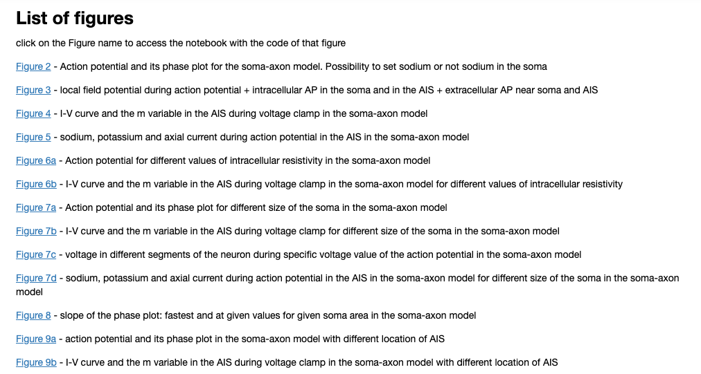
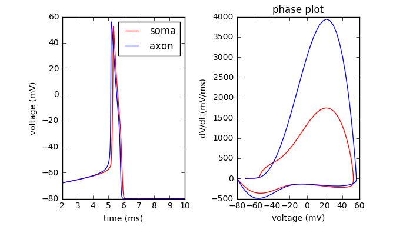

The code for the figures of the full morphology model associated with the paper:
Telenczuk M, Fontaine B, Brette R (2017) The basis of sharp spike onset in standard biophysical models. PLoS One 12:e0175362
http://dx.doi.org/10.1371/journal.pone.0175362
are available at the authors Zenodo (NEURON code) web site::
https://doi.org/10.5281/zenodo.344951
which also includes a link to a binder where the model can be run on the web:
http://mybinder.org/repo/maikia/kink_paper
Once you have started the binder you can navigate the index where a nice menu of figures exists as captured in the below image:

For example clicking on the figure 2 link leads to a python notebook which when the cells are executed generates these images:

A movie is also available:
https://doi.org/10.5281/zenodo.344955